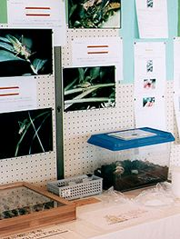
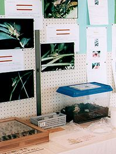

展示の紹介(てんじのしょうかい)
1998年は、8月13日(木)〜23日(日)まで行(おこな)われていました。

夏休みに五月山(さつきやま)緑のセンター周辺(しゅうへん)の自然の展示(てんじ)をしています。
センター周辺の生き物や池田市の昆虫などが見られます。

 



展示(てんじ)されていたようすを紹介(しょうかい)しています。
身近に見られるクワガタムシの生きているものなども展示されていました。
「お持ち帰り」のコーナーでは、カブトムシやオオクワガタの幼虫とスズムシをさしあげていました。


ゲンジボタルの幼虫も見られました。ほかにも生きたコオイムシや羽化(うか)がちかいギンヤンマの幼虫、ミズカマキリも見られました。

世界の蝶(ちょう)や甲虫(こうちゅう)の標本(ひょうほん)は、岡山県の「昆虫工芸木村」さんから池田市の子どもたちにいただきました。